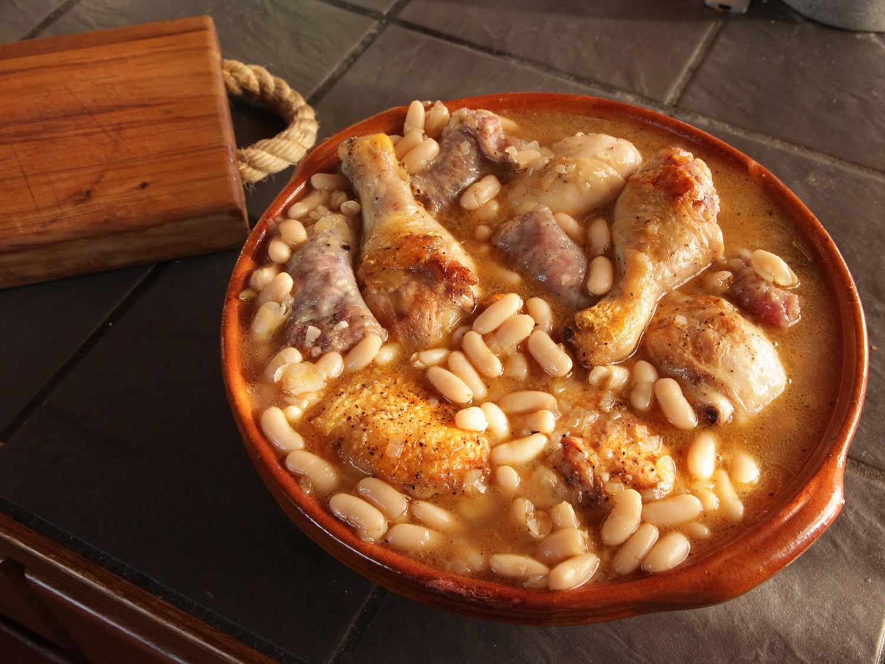

Elegância em cada prato.
Bem-vindo ao L’Étoile d’Or, onde a tradição da culinária francesa encontra a sofisticação contemporânea. Aqui, cada prato é uma celebração dos sabores, aromas e da paixão pela gastronomia. Nosso menu é inspirado nas clássicas brasseries de Paris, combinando ingredientes frescos, técnicas refinadas e um ambiente acolhedor e elegante. Descubra uma experiência gastronômica inesquecível, com pratos que encantam não apenas o paladar, mas também os olhos. Viva o sabor da França sem sair da cidade.
Chef
Reservar Mesa
Pratos principais
Hachis Parmentier

Um prato emblemático da Borgonha. Cubos de carne bovina são lentamente cozidos em vinho tinto com cenouras, cebolas, cogumelos e ervas aromáticas, resultando em um ensopado rico e saboroso. Uma verdadeira celebração da tradição francesa.
Preço: €18,00

Bœuf Bourguignon
O Boeuf Bourguignon é um prático típico de almoços em família. É um ensopado de carne bovina cozida em vinho tinto com legumes, raízes e cogumelos. Também é típico da Borgonha (daí seu nome), região bem conhecida por sua produção especial de carne bovina e por seus vinhos tintos.
Preço: €22,00
Cassoulet
Uma receita rústica e generosa do sul da França. Feijão branco cozido lentamente com carnes nobres — como confit de pato, linguiça e carne de porco — compõem este prato reconfortante, perfeito para dias mais frios.
Preço: €19,50

FoieGrass
Delicadeza da gastronomia francesa, ideal para ocasiões especiais. O foie gras de pato, preparado com precisão, é servido sobre uma fatia de brioche levemente tostado, harmonizado com uma geleia de cebola ou figo. Uma experiência requintada do início ao fim.
Preço: €25,00

Escargots
Uma iguaria tradicional da Borgonha. Caracóis são delicadamente cozidos na própria concha com manteiga de alho, salsinha e ervas finas. Uma explosão de sabor que surpreende até os paladares mais exigentes.
Preço: €18,00

Raclette
Originária da região da Savoia, esta especialidade à base de queijo derretido é servida com batatas, charcutaria, cebolinhas em conserva e picles. Perfeita para compartilhar, a raclette transforma cada refeição em um momento de convivialidade.
Preço: €20,00
Horario Funcionamento